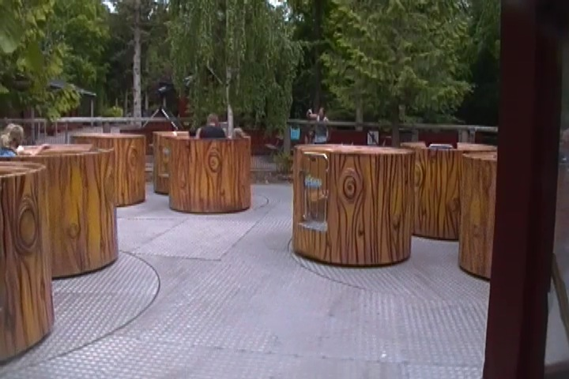

Fårup Sommerland is a fun park way up in Northern Denmark that may not get nearly as much attention as the other European parks, but this park is just a ton of fun. It's hard to say just how much stuff they have here. Because this park has A LOT!!! And I mean A LOT!!! The main thing that a coaster enthusiast will think about are the roller coasters, and yeah. Fårup Sommerland has some pretty good coasters. Falken is rough around the edges, but still a lot of fun. Lynet is a really good Gerslauter Launcher (Seriously, those things are a ton of fun). And Orkanen is just a really fun and pleasant coaster. Do not miss that. But aside from that, they have some other cool rides and honestly, just a ton of other fun stuff. Yeah, this park isn't even really about the rides per se. It's just all this really fun and cool stuff plopped down into one place. If you've ever been to summer camp, it's kind of like a giant version of that on steroids. If your summer camp featured roller coasters and other rides in addition to all the other stuff that made it a ton of fun, that's sort of what Fårup Sommerland is like. I know I mentioned that it's similar to its brother park down south, Djurs Sommerland. But even more than that, it really reminds me of Knoebels. I mean, both have a sort of camp atmosphere to them, both are in the woods, both are a ton more fun than people give them credit for, and they both have some really good coasters (OK, there's no Phoinex here, but they still have some great stuff). It's just a really great park with a ton of fun stuff. There's a whole lot of good stuff to go over, so let's dive right into the review and see what Fårup Sommerland has to offer.
Here are the reviews of all the Flat Rides at Fårup Sommerland. Now Fårup Sommerland...well, there's no good way to put it. The flat ride collection here blows. The only flat ride I managed to ride here were the Teacups. Yeah, they were fun. But they were just teacups. Nothing special about them at all. The one flat ride that looks...semi-unique is that they have this one drop tower that looks really small, like a frog hopper, but apparently it rotates throughout the ride. Looked mildly fun. The only other flat rides were a Waveswinger, a carousel, and a Rocking Tug. Oh, and apparently they added a frisbee since my last visit. Awesome. Just what the park needs. Let's move onto the other rides.

Yes. The Teacups are fun. Now let's move on.
Water Rides
While there's no stand out water rides at Fårup Sommerland, they do have the usual sort of stuff. They have both a log flume, and a rapids ride. I didn't ride either of them because it was a little chilly and I did not want to get wet. But from what I could see, the log flume looked pretty good. Not the best, but a decent size with a good splash that should be fun. The rapids ride, it looks fun. Looks like it has some rapids and the waterfall does look like a lot of fun. Actually, after looking at the photos of the ride, I'm thinking that I just might've ridden it and I just forgot because I took absolutely no photos or video of the ride (I know my GoPro was dead that day), so I never mentioned it in the update, so I forgot about it. But it's starting to come back to me. But this could very well be a false memory. But again, if I forgot the ride, it's clearly not that memorable and therefor, not that good. But it still was fun enough if I remember correctly, and that is if I did ride it. Whatever. Check out the water rides at Fårup Sommerland.
Dining
The food at Fårup Sommerland is good. The stuff they served us at our lunch was basically lasagna, pasta, and potatoes. So basically, all the stuff I like. And come on. You don't go wrong with lasagna. The pasta was pretty good too. I think it had some sort of Alfredo sauce on it. That was really good. And potatoes are potatoes. Pretty good. I'm not sure if this is the sort of stuff they serve normally in the park, but I enjoyed the spread that they had for us. And of course, you can get those big Danish Ice Creams here. Those are really good.
No. This isn't meat and potatoes. It's pasta and potatoes. There's a difference. ;)
Theming and Other Attractions
Here are the reviews of all the other stuff at Fårup Sommerland. All right. As far as theming, there's essentially none. Hell, I think there just might literally be no theming at all. A lot of amusement parks will even have a teeny little bit of theming that looks crappy. But this doesn't seem to have any at all. It's just rides plopped down along with a bunch of other cool stuff to do. And then we get to other stuff to do. Because this park has a TON of other cool stuff to do. Honestly, aside from the roller coasters, this is what makes the park stand out. Because the flat rides are dull, there's no dark rides, and the water rides look fun, but not a big deal. It's all the other stuff to do that really makes the park stand out. And let's start out with something that I didn't do, but I honestly wish that I did. Speedboating. Yes, you can rent a speedboat and just hit the water. DAMN!!! That looked so cool!! I'm honestly not sure why I didn't do it. Time I guess, but that's definetly something that I'm kicking myself in the balls for not doing because those things are awesome! You totally should go speedboating if you can. You will not regret that. And that's just one of many different cool activities that they have at Fårup Sommerland. All right. Let's move on to Skattejagten next. What is this? Simple. It's an obstacle course. Yeah, a lot of parks have obstacle courses, particuarly in Europe, and yeah. They're fun, but this one just blows all the others out of the water. This is without a doubt, the best obstacle course at any theme park that I've been to. The obstacle course includes a maze that's actually kind of difficult (Not too hard, but it's possible to get lost), a climbing wall, lots of nets, some slides, monkey bars over water that has leeches, and some ziplines at the end. OK, this is all freaking awesome. It's just a ton of fun doing all of this stuff with friends. You definetly have to do the obstacle course. And there's even more random fun stuff to do. They have mini golf for you to play, you can go horseback riding, you can shoot BB Guns at a target. I'm honestly surprised that they have this in the European Parks, but not the American parks. Isn't this the land of guns, 2nd Amendment, won't even pass common sense gun control when 30 kids are slaughtered in an elementary school, and all that sh*t? Whatever, it's fun here, even if I'm the worst shooter on the planet with no aim whatsoever. And then of course, you have all the fun stuff such as trampolines, bouncing pillows, triangle slides, and other cool playground equipment that may be common around Europe, but isn't anywhere in the U.S. So yeah. If you've been wondering why I've been calling Fårup Sommerland a giant summer camp with roller coasters, well...this is partially why. Obstacle Courses, Playgrounds, Mini Golf, Horseback Riding, Shooting, all very summer campish, all that's missing is a campfire and camping on the lot. And who knows. Maybe they do have that. What I do know is that Fårup Sommerland is not lacking in cool stuff to do.
Warning. You just might lose $900 sunglasses on this obstacle course.
In Conclusion
Fårup Sommerland is a really great amusement park. I know that I keep saying that this park is basically a giant summer camp with roller coasters, but yeah. That's exactly what this park is like. And honestly, that's why I like it so much. It's just got a real charm to it. A great atmosphere to it that you don't get at most other parks. It's just the kind of park where yeah. You can ride some really good roller coasters, as Falken, Lynet, and Orkanen are all really fun rides (If you haven't read the reviews for each of those rides, go read those). But on top of all that, you can go speedboating, challenge yourself on a really fun obstacle course, play mini golf, go horseback riding, shoot stuff with a BB Gun, and there are just playgrounds galore to have fun on. Oh, and they have some other rides to enjoy as well. Not too many other theme parks are like Fårup Sommerland. I suppose they could improve by adding more random flat rides and maybe a dark ride. Yeah, that'd work really well with the park. But they honestly don't need too much else as it's just a ton of fun. Sure, I suppose all of this just doesn't sound too appealing to you (Even if you're a hard core coaster enthusiast, Lynet is freaking awesome and reason enough to visit), then Fårup Sommerland just isn't the park for you (LAME!), but it's a great park. Yeah, it's not Europa Park, Tivoli Gardens, or anything like that. But it's not supposed to be. It's its own type of park that just has a ton of charm and is a ton of fun. Definetly give it a visit if you're in Northern Denmark.
Enthusiast FAQs.
*Are there kiddy coaster restrictions? - No. There are no restrictions for any of the kiddy coasters.
Tips
*Make sure you get plenty of rides on Falken and Lynet.
*Orkanen is much more fun than you'd think.
*Don't make the same mistake I made. Do the speedboats.
*Make sure you don't lose your sunglasses when doing the obstacle course.